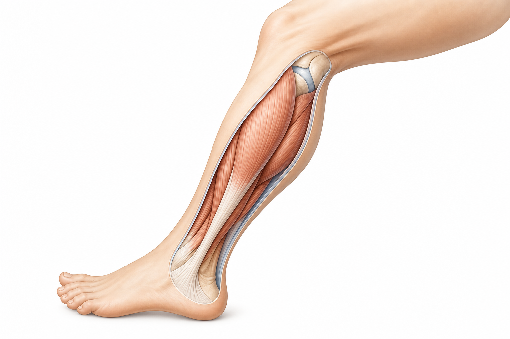
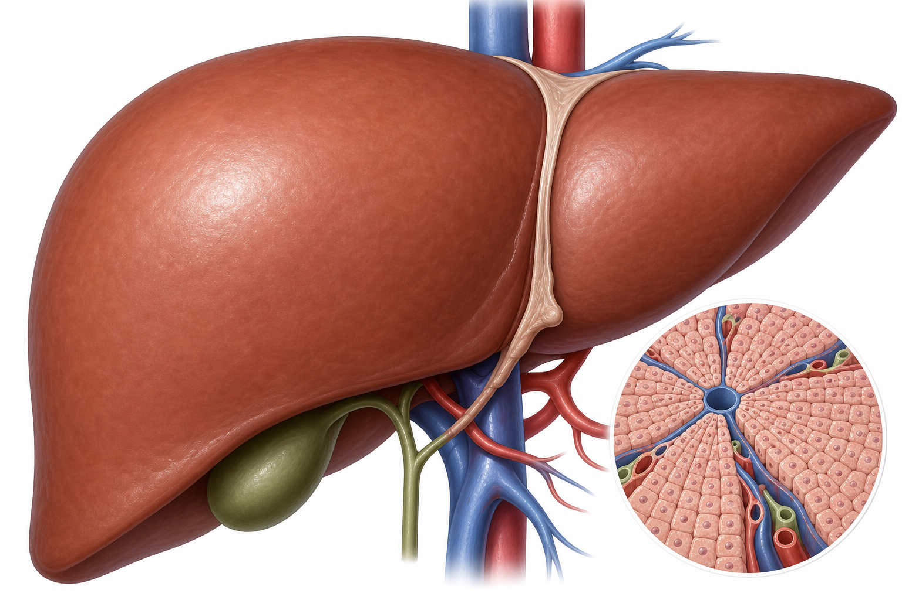
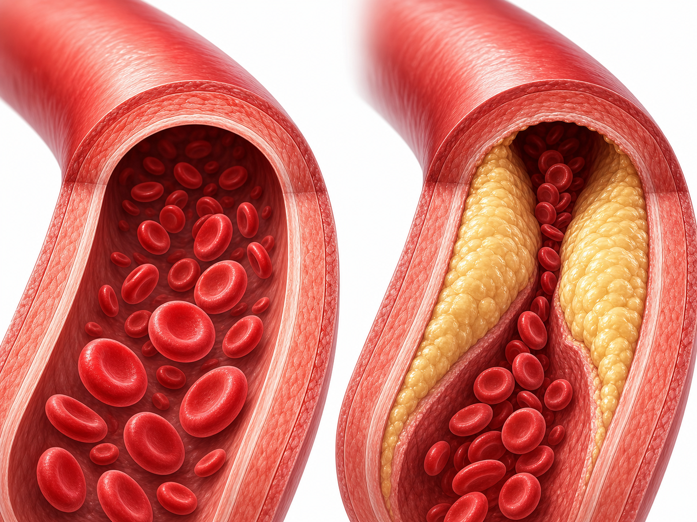

스타틴 부작용,
걱정과 진실 사이
근거로 보는 스타틴 안전성 (Statin Safety) — 무엇을 걱정하고, 무엇을 안심해도 되는가
무엇을 얼마나 걱정해야 하나
근거 기반 걱정 수준 — ★(낮음) … ★★★★★(가장 중요). 진짜 위험은 부작용이 아니라 '안 먹는 것'입니다
근육 증상 — 통증은 진짜, 약 때문은 드뭅니다
실제로 호소하는 근육증상과, 약을 모르게 비교했을 때의 '진짜 차이'는 약 5배나 벌어집니다 (SAMS · 스타틴 연관 근육 증상)

근육통의 약 90%는 '약 성분'이 아닙니다
노세보(nocebo) 효과 — 약을 먹는다는 생각만으로도 같은 증상이 생깁니다
근육 증상이 있으면 — 즉시 중단이 아니라 단계적 재평가
바로 그래서 — 스스로 끊지 마세요. 대부분 용량 조정·약제 전환으로 다시 잘 복용할 수 있습니다
간 수치 — 정기 간검사는 더 이상 필요 없습니다
무증상 간수치 상승은 흔하지만, 의미 있는 간손상은 매우 드뭅니다 (간효소 상승 · transaminitis)

당뇨가 약간 늘 수 있지만, 이익이 훨씬 큽니다
신규 당뇨 (NODM · New-Onset Diabetes Mellitus) — 위험은 작고, 심혈관 이익은 명백합니다
당뇨 위험은 소폭(상대위험 약 9% 증가)이지만, 심근경색·뇌졸중을 막는 이익이 이를 명백히 초과합니다.
여러 대규모 연구(9만여 명)에서 확인된 결과입니다. 고용량일수록·당뇨전단계일수록 위험이 조금 더 올라갑니다. 중요한 점은, 당뇨가 생기더라도 스타틴의 심혈관 이익은 그대로 유지된다는 것입니다.
약물 상호작용 — 알면 대부분 안전하게 관리됩니다
아시아인은 로수바스타틴 혈중농도가 약 2배 → 5mg 저용량 시작 권고 (FDA)
- 심바스타틴 (simvastatin)
- 로바스타틴 (lovastatin)
- 아토르바스타틴 — 일부만 대사 (영향 적음)
- 자몽주스 — 심바스타틴 농도 3~4배
- 아졸계 항진균제 (이트라코나졸 등)
- 마크로라이드 (클래리스로마이신)
- 베라파밀 · 딜티아젬 · 사이클로스포린
- HIV 단백분해효소억제제 — 심바·로바 금기
- 로수바스타틴 (rosuvastatin)
- 프라바스타틴 (pravastatin)
- 피타바스타틴 (pitavastatin)
- 플루바스타틴 (fluvastatin)
- 프라바스타틴은 간 효소(CYP) 대사 안 함
- 피브레이트는 페노피브레이트 선호
- 아지스로마이신은 비교적 안전
- 새 약을 시작하면 미리 알려 주세요
진짜 위험은 부작용이 아니라 '안 먹는 것'입니다
지금까지는 부작용 이야기였습니다 — 그런데 진짜 위험은 다른 곳에 있습니다

흔한 오해 바로잡기
자주 듣는 걱정 네 가지 — 사실은 이렇습니다
환자분이 기억할 7가지
스타틴을 안전하게, 그리고 끝까지 잘 복용하기 위한 실천 항목
부작용은 되돌릴 수 있지만
심근경색은 되돌릴 수 없습니다
불편한 점이 생기면 끊지 마시고 언제든 말씀해 주세요 — 함께 조정하겠습니다
광교중앙로 298, 4층
토요일 08:30~13:30
같은 자료를 다시 볼 수 있어요